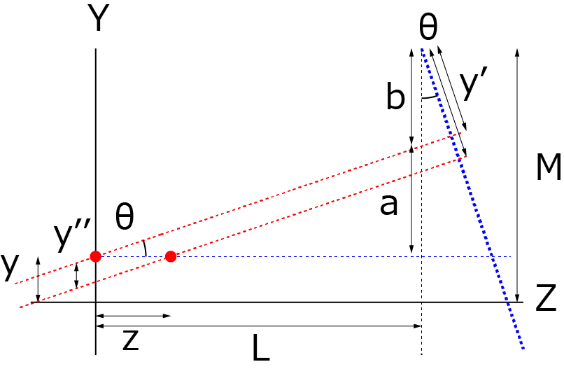

斜め上から波形を描画する方法-03
YZ平面（ Z方向にオフセットがある場合）
まずはYZ面を考えます（真横から見た様子）．

右の赤点のようにｚだけZ方向にずれた位置を考えます．
この場合には，Z方向のオフセットはｙ方向に投影されるので，
\(\Large y'' = - z sin \theta \)
なので，前ページの最後の式中のｙ'は，
\(\Large y' = ( M - y + z sin \theta) \ cos \theta - L \ sin \theta \)
と補正されることがわかります．
これで，観察平面のｙ’方向は完成と思われますが，まだです．
それは，Lの値がｘによって変化するからです．
次ページに， ｘ方向を考慮して考えていきましょう．